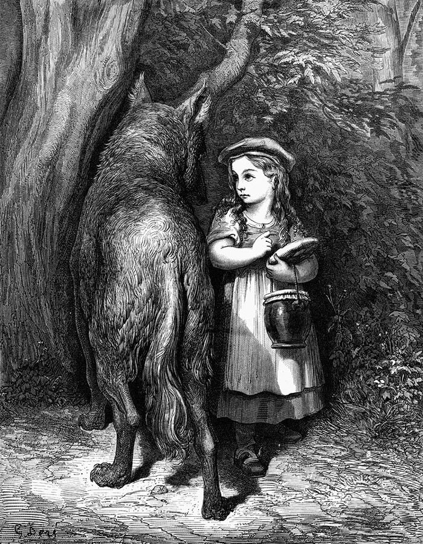

shrink my head
… asking me how to shrink my head again …
译本：「好了，这样的问题又来了」
又来拿精神分析那一套剖析我了
这是波兰斯基的话，不是作者的。美国俚语管精神科医生叫 headshrinker，简称 shrink；「缩我的脑袋」就是给我做精神分析。他不愿解释动机，同一段接着抱怨影评人从片子里挖出他根本没想过的象征。
这一篇讲怎么编故事。作者一开头先认错：他曾让学生分析《小红帽》的「真正含义」，大家反倒更不敢编了。于是他换了个问法：先不管故事「关于什么」，只看它是怎么搭起来的。这两节拿他当场编的一个熊的故事（编了两遍）、一个六岁女孩的睡前故事、一个只答「是 / 不 / 也许」的猜谜和一组两人接力的练习，回答一个程序员也会好奇的问题：一串事件，什么时候才算一个故事？读的时候抓住一个词：reincorporation。

上一篇讲自发性：别审查第一个念头，接住对方的提议，那些都是一句一句的事。这一篇把它们放大到一整个故事。这一页的两节是总论和第一套练法；下一页（§3 前半）是一串绕开审查的游戏，再下一页是一人一字、编故事的三条规则和全篇的收尾。§2 后半那句「不让人为想象负责」，就是下一页的起点。
作者在这一页说内容可以不管，它会自己跟来。这是教学的策略，不是他对艺术的全部看法：这一篇最后一节（§5）他自己收回一半，说最好的即兴演员在某个层面上明白自己在演什么。带着这一点读。
一串事件，什么时候才算一个故事？
读的时候带着这几个问题。不用先找答案，读完回来对照「检查一下理解」。
§1 开头不是作者的话，是一段《花花公子》对导演波兰斯基的访谈。作者接着讲自己走过的弯路（让学生分析含义、在剧本部读稿），扯到几何符号和《李尔王》，宣布「不管内容」，又插进一段 Alex Comfort 说他像治疗师的往事。然后才进正题：字典的定义不够用，他当场编熊的故事，编两遍对照着看，引出 reincorporation。后面两个长例子都是对话实录，Dorcas 的小鸟和女演员的猜谜，读者容易被对话带着走，要紧的是每段之后作者那几句点评。§2 换成练法：一个比喻，一个两人接力的游戏和四个例子；最后两个小办法（边倒数边写、双手画）已经是下一页那串游戏的开头。
作者落在哪：一串事件不等于故事；听的人在等的，是有人把前面搁下的东西拿回来接上（reincorporation）。编的时候内容先别管，它会自己跟来；即兴演员要像倒着走的人，一边往外放新材料，一边回头捡旧的。
这一页是原书和译本「叙事技巧」一篇的前两节。粗体是本站给的节名，下面是译本的节号和小标题、这一节在译本电子书中开头的几个字（搜它就能跳过去），再下面是英文原文的开头。每节标了档：「先读」是这本书最精彩、不读就错过的，「有空」好看但跳过不丢线。读完打个勾。
先把这一页用到、作者默认你懂的几个概念讲一遍。讲的是概念本身，作者拿它推出什么，读原书时自己看。
说一个故事「关于什么」，它的主题、寓意、象征，作者叫 content（内容）。说它「怎么搭起来」，先出了什么事、后出了什么事、哪件接上哪件，叫 structure（结构）。语文课多从前者讲起：《白鲸》象征什么，《小红帽》教育孩子什么。
作者的用法有个特别处：他认为一部作品的内容不在人物嘴上的台词里，而在情节怎么走里。一部电影让正直的警长最后落得残废或送命，台词再怎么歌颂他，观众带走的也是「别出头」。程序员的说法：别看注释写了什么，看代码实际跑出了什么。
在这一页：§1 作者宣布不管内容，理由之一就是「内容在结构里」；不管内容以后，他才腾出手来专看故事怎么搭。
这个词来自精神分析：弗洛伊德让病人躺在沙发上，想到什么说什么，不挑不拣，治疗师从这些话里找线索。作者借这个词，意思窄得多，也和治疗无关：讲故事时只管往外放新东西，人、地方、怪事，不管它们彼此连不连得上。
它是讲故事的一半，负责「放」。只有这一半，故事可以一直讲下去，也可以随时打住，听的人不知道该在哪里鼓掌。作者认为，人放不出来，多半不是脑子里没东西，而是怕冒出来的东西被当成自己的；这一点下一页讲不必为想象负责时会展开。
在这一页：§1 熊的故事第一遍是纯联想；§2 的两人接力里，A 只管这一半，最后作者让一个人把两半都包了。
把故事前面出现过、后来被搁下的东西，在后面重新拿回来用上。悬疑剧开头一句话带过的一把旧钥匙，结尾打开了保险柜；戏剧行里有个老说法「契诃夫之枪」：第一幕墙上挂了枪，后面就得响。单口喜剧把回头用前面的笑料叫 callback。
作者把它当成讲故事的另一半，负责「收」：联想往外放，重新纳入往回收，收上了，听的人就觉得故事完了。这个词译本：「重组」，读起来像「重新排列组合」，看不出「拿回来」的意思。读到「重组」，就想成「捡回来接上」。
在这一页：§1 作者用第二遍熊的故事立起这个词，再用小鸟和猜谜两个例子示范；§2 的比喻和接力练的也是它。
作者在课上用过、照着就能玩的；个别几张是本站照书里的段落改的，卡里写明了来历。几个人、怎么玩、看什么写在卡片上；「先猜」那一栏是书里的课堂上发生了什么，先自己猜，或者先玩一次，再点开。全书的游戏卡汇总在游戏汇总。
她问出一个没有人、只有昆虫的故事：虫子统治了世界，吃光一切，越长越大，最后住不进楼里了。作者说故事是她编的：她问的是虫子「一开始」无不无害，可见她有意要造出一股破坏的力量；被答「不」以后照样让它们变大；结尾又把开头的楼接了回来。
作者说他们在聚会上玩时，会故意引人编出下流的故事，等他骂别人心思变态，再告诉他那是他自己编的。这是拿人开心，换个场合会伤人，揭底前想想对方受不受得了。
B 说自己没事可做了：A 已经全接上了，作者答「对！」。作者举的成功例子里，B 都是把 A 放出的东西一样样捡回来。他也说，不敢说这办法能出伟大的文学，但能让那些自称从来编不出故事的人编出来。
他数到 60，觉得脑子要炸了，像脑震荡之后硬写字。打出来的是几句不着边际的话，有停车场、混凝土、一位护士，还有性的字眼。他说，一旦有机会，你身上的某样东西「想」写什么，会让你很吃惊。
作者说这会让人的心智退回到大约五岁，奇怪的是，两只手的画技看起来是一个水平。他没有解释为什么，也没说在多少人身上试过。
按在书里出现的顺序排，标题前是节号。只讲到读懂这一页需要的程度。
篇首的对话出自 1971 年《花花公子》杂志对他的长篇访谈，作者原样摘了一段，没加一句评论，摘它的用意要看下面几段：导演自己说不知道为什么想到有人掉下船，影评人读出来的象征他也没想过。作者拿它开场，引出「编故事的人不必知道含义」。
作者说他当年觉得艺术家应该 committed。这是 1950–60 年代欧洲文艺圈的口号，源头之一是萨特在 1940 年代后期提出的「介入文学」：作家要表明政治立场，为作品的社会效果负责。作者落脚的皇家宫廷剧院正以这类关心社会问题的新戏出名。他在那里主管过剧本部（见第一篇），每周要读大量投稿。背景：英格兰和威尔士直到 1967 年才部分废除对男同性恋行为的刑罚，舞台审查到 1968 年才取消；作者在剧本部的那些年，写这类题材本身就要冒险。他举的两部警察片《势不两立》《冲突》都是 1973 年的美国电影。
作者说符号有自己的「内容」，但不是一一对应：卍字（几千年前就有，二十世纪被纳粹拿去当党徽）带着爪子似的动势，圆更静。故事把一大堆符号叠在一起，就更没法说清它「意味着」什么。他举《李尔王》演到高潮的时候：发了疯的国王、装疯的 Edgar（化名「可怜的汤姆」）、还有弄臣，也就是宫廷里拿钱说疯话的小丑，三种疯搅在一起，观众只能被卷着走。
作者说 Comfort 拍过他上课，认为他其实在当治疗师，把学生引进平时的「禁区」。这里有两个精神分析的词，作者没解释：防御（defences），人为了不碰到让自己难受的东西而竖起的心理屏障；移情（transference），来访者把对父母这类重要的人的爱或恨，转到治疗师身上。作者的意思是：他从不把学生编出来的东西当成学生的秘密来解读，学生就犯不着爱他或恨他。
作者说 Bowers 写过一篇文章讲这个猜故事的游戏，登在「我想是」《花花公子》上。作者自己也拿不准，本站没有核实这篇文章。
读译本时值得翻一下原文的地方：双关、行话、口语，和译本传不出的语气。灰色斜体是原文里的一小段，在英文电子书里搜它就能找到；方框里是译本这一句的译法。译错的放在下一节「译本勘误」。
对着译本读这两节时，下面这些地方会把人读歪。方框里是译本的原句，在译本电子书里搜它就能找到；灰色斜体是英文原文那一处。只收意思错了、反了、漏了的，措辞上的出入不收。全书的勘误汇总在译本勘误。
… audience wouldn’t be aware of the fact …
译本：「挑战在于如何让观众意识到」
波兰斯基说，全片只有三个人，连背景里都没别人，难处是拍得让观众「意识不到」这一点。译本说成要让观众意识到，正好反了。
… should be held responsible for the effects …
译本：「我曾觉得一个艺术家应该“尽责”」
committed 是当时文艺圈的口号：艺术家要有政治立场，为作品的社会效果负责（effects 是效果，不是「呈现」）。后面他说「不管内容」和自己的政治思想相矛盾，接的就是这层。「尽责」读来像敬业，政治的意思丢了。
… it’s a good sign for power …
译本：「它是权力的标志，如同一个爪子」
原文是说卍字的形状「很适合」用来代表权力，圆「更适合」代表永恒。作者的论点是符号本身带着倾向，不全是人赋予的。译本写成「它是权力的标志」「它是永恒的标志」，像在讲约定俗成的含义，论点就看不出来了。
… the fool paid to be mad …
译本：「一个为疯狂付出代价的傻瓜」
the fool 是《李尔王》里的弄臣，宫廷养着、靠说疯话挣钱的小丑。作者列的是三种疯：真疯的国王、装疯的人、拿钱装疯的弄臣。「为疯狂付出代价」意思不对。
… only needs to worry about content if …
译本：「他只需要担心内容就行了」
原文是：艺术家平时不必操心内容，只有在硬装一种自己没有的个性、表达自己并不认同的观点时，才需要操心。译本「只需要……就行了」读起来像「装了以后，操心内容就够了」，限定的意思变了。
… on the spur of the moment …
译本：「让即兴演员可以在任何情况下易如反掌地使用」
on the spur of the moment 是「临时、当场」。作者要的是一套即兴演员在台上来不及细想时也能用的理论，重点在「当场」。译本的「易如反掌」把意思换成了简单好用。
… waiting for another activity to start …
译本：「而是把之前的进行“重组”」
reincorporation 是把前面搁下的东西拿回来再用上。译本全篇译作「重组」，下一段又作「重新组合」，读来像打乱重排。读到这两个词都想成「捡回来接上」；本站统一叫「重新纳入」，这一条只报这一次。
… the content has looked after itself …
译本：「其内容是自成体系的」
原文：和往常一样，内容自己照顾好了自己，也就是他没去管，它照样有了。as usual 是「和我每次一样」，不是「和正常故事一样」。「自成体系」说的是另一回事。
… only of interest to critics or psychologists …
译本：「评论家和心理学家都会觉得它很有趣」
原文是一句轻视：内容反正只有评论家或心理学家才感兴趣，他自己在乎的是联想得轻松、接得巧。译本变成了夸这个故事有趣，口气不对。
… whom she remembers we’d shelved …
译本：「她记得我们把那个伐木人搬出来了」
shelved 是「搁在一边」。故事讲到大象时，拿斧头的人已经没了下文；她记着这个被搁下的人，让大象把剩下的水喷到他身上。这正是作者要示范的重新纳入，译本的「搬出来」把这层弄丢了。
… feels wary, and open to hostile criticism …
译本：「并对敌对的批评持开放态度」
原文：她不再提防，不再觉得自己会挨充满敌意的批评；作者补一句，在我们这种文化里，人一自发地做什么，都会有这种感觉。open to 是「暴露于」，不是「欢迎」，译本正好读反了。
… in this bloody story …
译本：「但在这个血腥的故事里没有任何人」
bloody 在英式口语里是加重语气的粗话，相当于「该死的」。女演员连着碰壁，急了：这破故事里怎么一个人都没有！故事并不血腥。
… she shapes the story by recapitulation …
译本：「通过生物进化的重演来塑造故事」
recapitulation 一般指概括重述、回头再提；生物学里有「个体发育重演进化史」的旧说，译本大概取了这个义项。这里是说她把前面的东西再提一遍接上，也就是重新纳入，下一句讲的正是楼和虫子在结尾接回来。
… She’s joined it all up herself …
译本：「她自己能做的都做了」
B 抱怨的是：A 讲的开头自己已经前后连好了，没有散落的东西留给 B 去收。这正是作者说「想替 B 省事反而更难」的意思。译本的「能做的都做了」看不出这层。
… see what something in you …
译本：「当有机会看到你真正“想要”写的东西时」
原文的主语是「你身上的某样东西」：一有机会，它想写什么，会让你吃惊。作者是说写字的好像不全是「你」，和本节前面说的「不让人为想象负责」相通。译本写成「你真正想写的」，这层意思没了。
Content lies in the structure, in what happens, not in what the characters say.— §1。本站译：内容在结构里，在发生了什么里，不在人物说了什么里。
这是全篇的口号，口气是下判断，原文 structure 是斜体。前面他刚说完那批剧本和警察片：作者想表达的是一回事，故事怎么走是另一回事，观众信的是后者。容易被误读成「内容不存在」：他没这么说，他说的是内容藏在情节里，所以编的时候可以先不去想它。
The improviser has to be like a man walking backwards. He sees where he has been, but he pays no attention to the future.— §2。本站译：即兴演员得像一个倒着走路的人。他看得见自己走过的地方，却不去理会前方。
一个打比方，是这本书最常被引用的句子之一。关键是 pays no attention：不是看不见前面，是不去理会。下一句他说故事可以带他去任何地方，但得靠记着搁下的东西把它「配平」。读到这里，把它和第一遍、第二遍熊的故事对一下：第一遍只顾往前走，第二遍一直在回头。
读完这一页的两节再看。下面是作者在这两节里的主张，由本站按主张重新组织，不按原书的顺序；每条后面是节号，拿不准就回书里那一节再读一遍。
他从自己的失败说起：让学生分析童话和剧本的含义，他们更拘谨了；他自己越想弄懂「真正的」含义，写得越少。他承认这个决定和自己的政治思想相矛盾。他还猜，正因为教课时不抓学生作品的内容，学生才没把他当成揭他们秘密的治疗师。
§1他读剧本、看电影时发现，作品传达的常和作者的本意相反，因为观众看的是发生了什么。一个人自发地即兴，内心深处的东西总会露出来，所以不必刻意去放内容。他编完熊的故事，只随口猜它大概和性焦虑、怕老之类有关，说要是事先「知道」，他就不会编出这个故事。
§1字典说故事是一串事件，作者说不够：小孩都知道问「完了吗」。只有联想，故事可以停在任何地方；听的人下意识在等的是有人把前面搁下的东西拿回来。他说观众常常为这一下鼓掌，观众自己也说不出为什么。
§1–§2那位女演员一相信故事是作者想的，立刻放松，编得很顺；聚会上自称没想象力的人，只要相信不用为故事负责，也编得出惊人的东西。所以作者说，「想不出」其实是「不愿想」，这他不介意，只要当事人明白那是拒绝，而不是缺才能。
§1他让一个人只管放、另一个人只管收，熟了再让一个人包办；还要想办法让人不必为想象负责。他不说这能出伟大的文学，但能让人开始编；对写作者的用处是卡住时往回看，别往前找。
§2合起来：作者交给即兴演员一个能当场用的故事理论：先放，再收。放的时候别管它意味着什么，收的时候回头看，别往前找。至于内容，这一页说可以不管，这一篇的最后一节他会补上后半句。
这本书 1979 年出版。下面挑出这一页里能被后来的研究检验的说法，分「书里 / 当时 / 今天」三栏，并给一个结论。结论判的是标题里「书里的说法：」后面那一句。全书的这一节汇总在今天怎么看。
读完作者的主张，再看它站不站得住。每一块摆出三样：主流怎么看，作者怎么看，本站的评论。最后一句是本站对这一页的总体判断。
主流看法：写作教学里，把「写出来」和「改得好」分开是常见的建议：Peter Elbow 1973 年的《Writing Without Teachers》提倡的自由写作，就是一口气写十来分钟，不停笔、不回头删改。文学批评一直在谈作品的含义，但也早就承认作者未必清楚自己写了什么，作品的意思不能只按作者的意图算。
作者的看法：内容可以忽略，它会自己照顾自己；追问含义只会让人更拘谨，他自己就越想越写不出。§1
本站的评论：读成「先别管」最准。作者自己并没有不看内容：同一节里他就在读剧本的寓意，猜熊的故事跟性焦虑有关。他要学生别管，是因为边编边审，手就停了，这和自由写作、先写后改相通，今天的写作课还在这样教。这一篇最后一节他说这话「对，也不对」，读到那里再回来对照。
主流看法：研究写作障碍的 Mike Rose 发现，他访谈的那些卡住的学生既不缺能力，也不是不用心，而是守着几条太死的规则和计划（比如「开头必须一下抓住人」）；前面那篇元分析也说，评价的压力大到一定程度，会压低创造性表现。
作者的看法：说「想不出故事」的人，真正的意思是「不愿意想」；这没关系，只要他们明白那是一种拒绝，不是缺才能。§1
本站的评论：这句话是在给人宽心：把「没天分」换成「一个可以放下的拒绝」，等于告诉你门没锁。但「不愿」只是一种解释，作者的证据是课堂和聚会；Rose 的说法更具体，也更好用：你可能在守一条自己都没察觉的规则。两种说法其实指向同一处：卡住的不是材料，是门口那道关。
主流看法：编剧手册多从人物讲起：他想要什么，什么挡着他，他怎么变；认知心理学讲的是事件之间的因果连接；「契诃夫之枪」讲的是伏笔要兑现。重新纳入最接近最后一种。
作者的看法：他要的是一套即兴演员在任何情况下当场能用的理论；故事需要联想和重新纳入两样，听的人在等后一样。§1
本站的评论：作为台上的工具，它好用得出奇：即兴演员没时间设计人物的弧线，只能回头看手里已经有什么。程序员读来也眼熟：声明了却没用上的变量，读代码的人会一直惦记。但它只管「收得上」，不管「动不动人」，作者自己也不说这样能编出伟大的文学。熊的故事收得漂亮，让人记住的是结尾被熊皮封住的那一下，那是另一种功夫。
本站的总体看法：这一页值得带走一组简单的工具：故事卡住时往回看，把搁下的东西捡回来；编的时候别边编边审。「不管内容」当作教学的办法读，不要当作艺术观；作者对人为什么编不出来的解释，是他课堂上的经验，不是测出来的。
先在心里答，再点开。答错的那题，回书里把对应那一节再读一遍。
导演说他不知道自己为什么想到有人掉下船，影评人读出的象征他也没想过。作者借它引出自己的主张：编故事的人不必知道故事的含义，知道了反而可能编不出。
第一遍一件接一件冒出新东西，可以永远讲下去，也可以随时停。第二遍让熊划船追来、熊皮和老人接上、小船也拖了回来，前面出现过的东西都被重新用上，听的孩子才会觉得完了。
作者问那个人手里拿着什么，她答斧头，把他和鸟的树接上了；作者问大象鼻子里剩的水怎么办，她想起那个早被搁下的伐木人，让大象喷他。
她连着碰到几个「不」就会泄气，他有时改答「是」给她打气，最后干脆一直说「是」。规则本身不重要，要紧的是让她相信故事是作者的，不是她的。
他从不把学生编出来的东西当作揭露学生秘密的线索，而是当作正常的、和别人的东西连在一起看。这样他就不会被当成威胁，学生犯不着爱他或恨他。
A 的任务是放出互不相干的材料，留给 B 去收。A 自己全接上了，B 手里没有散落的东西可捡，只能说「我没事可做」。
一是鼓励你想写什么就写；二是卡住时往回看，找前面搁下的东西重新用上，而不是往前搜新点子。
用一句话说这一页：
想一想：你最近讲过的一件事（对朋友、在会上、给孩子讲睡前故事），结尾有没有回到开头提过的东西？要是现在让你给一个六岁的孩子编个睡前故事，你会先放出哪三样东西，又打算怎么把它们收回来？
读过又忘了，从这里想起来。挑的是这一页最值得记住的故事、游戏和说法，不按原书顺序；每条后面是节号，想细看就回书里那一节。全书各页的这一节都收在全书回顾。
一句话：一串事件不等于故事：先放开去联想，再回头把搁下的东西捡回来接上。
第一遍熊、湖、岛、老鹰、天鹅，一路往外冒，停不下来。第二遍熊划船追来，脱了熊皮变成老人，最后「我」披上熊皮再也脱不下：东西都捡回来了，故事就完了。
§1作者和六岁的 Dorcas 合编睡前故事，她让大象把鼻子里剩下的水，喷向那个早被搁下的拿斧头的人。作者说她比很多大学生懂讲故事。
§1女演员以为在猜作者心里的故事，其实他按问句最后一个字母作答，后来干脆一直说「是」。她「猜」出了昆虫毁灭世界的故事，全是她自己编的。
§1同情同性恋情侣、却让他们被毁掉的剧本，正直警长落得残废的电影：作者说观众带走的是情节，不是台词，作品常常说出了作者没打算说的话。
§1即兴演员看得见走过的路，不去理会前方。他一边往外放，一边回头把搁下的东西捡起来接上，观众常为这一下鼓掌。
§2